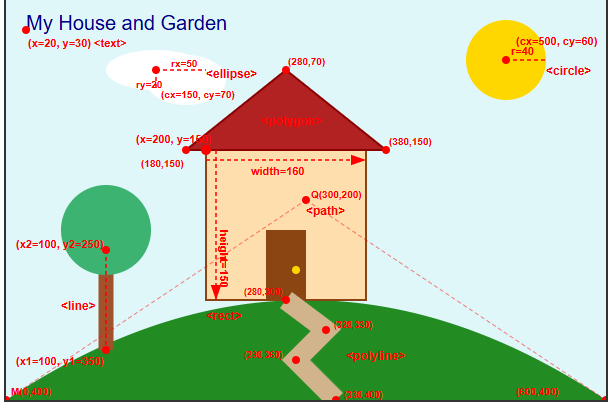
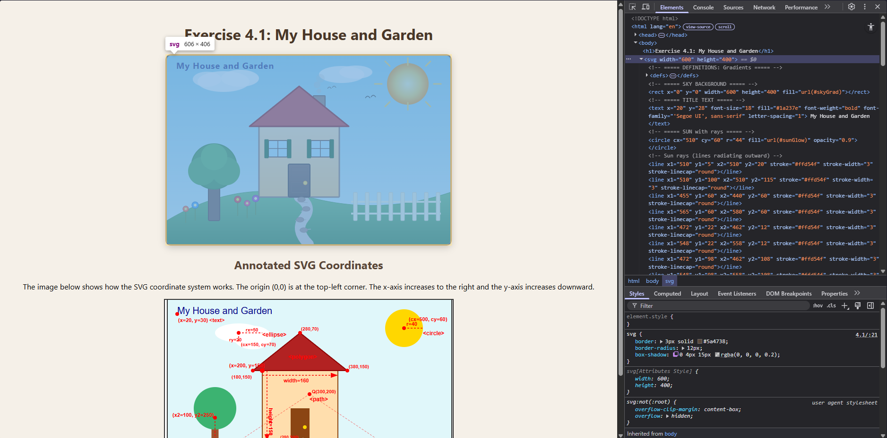

The image below shows how the SVG coordinate system works. The origin (0,0) is at the top-left corner. The x-axis increases to the right and the y-axis increases downward.

The screenshot below shows the SVG house and garden alongside the
browser's Developer Tools (Elements panel), revealing the DOM structure of
the SVG elements including <defs>,
<g>, <rect>,
<circle>, <polygon>,
<line>, and other SVG nodes.

This exercise was completed primarily by the student. Gemini AI (Google) was used as a supportive tool to assist with the following aspects:
<linearGradient>,
<radialGradient>)
<g> group element structure and
transform="translate()" usage
All design decisions, layout planning, and final implementation were carried out by the student. AI was used as a reference and coding assistant, not as the primary author.
© 2026 COS30045 Data Visualisation — Week 4, Exercise 4.1